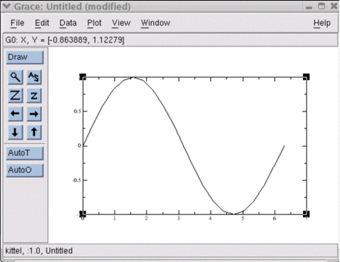
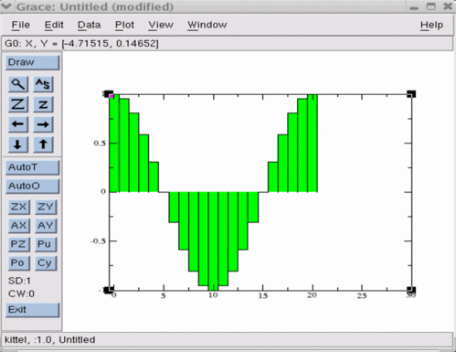

pygrace
Python bindings for grace, based on Nathan Gray's gracePlot
Requires grace and numpy
Download pygrace source tarfile
Installation
unzup and unpack the gzipped tar archive
$ tar -xvzf pygrace-0.4.tgz
install the package
$ python setup.py build
$ python setup.py install
(alternatively, install with 'easy_install')
Documentation
import the grace class
>>> from pygrace import grace
instantiate the grace class
>>> pg = grace()
get help
>>> pg.doc()
Methods:
prompt() --> start interactive session
eval(command) --> execute a grace command
put(name,val) --> put variable into interactive session
get(name) --> get variable from interactive session
who([name]) --> return the existing grace variables
delete(name) --> destroy selected pylab variables
restart() --> restart a grace window
Notes:
grace and Numpy must be installed, grace also relies on (open)motif
Copyright (c) 2009 California Institute of Technology. All rights reserved.
If you use this software to do productive scientific research that leads to
publication, we ask that you acknowledge use of the software by citing the
following paper in your publication:
"pygrace: python bindings to the Grace plotting package", Michael McKerns,
unpublished; http://www.its.caltech.edu/~mmckerns/software.html
use grace methods directly from the python interpreter
>>> from numpy import *
>>> x = []
>>> for i in range(21): x.append(i*pi/10)
...
>>> pg.plot(x,sin(x))
push python variables into grace and interact with grace scripting language
>>> pg.put('x',x)
>>> pg.put('y',cos(x))
>>> pg.eval('s0 line color 2')
>>> pg.eval('plot(x,y)')
use the interactive grace prompt
>>> pg.prompt()
grace interface:
vars=
y
x
grace> histoPlot(y)
grace> s0 fill color 3
grace> redraw()
grace> exit
check variables in grace session
>>> pg.who().keys()
['y', 'x']
>>> pg.who('x')
[0.0, 0.31415926535897931, 0.62831853071795862, 0.94247779607693793,
1.2566370614359172, 1.5707963267948966, 1.8849555921538759,
2.1991148575128552, 2.5132741228718345, 2.8274333882308138,
3.1415926535897931, 3.455751918948772, 3.7699111843077517,
4.0840704496667311, 4.3982297150257104, 4.7123889803846897,
5.026548245743669, 5.3407075111026483, 5.6548667764616276,
5.9690260418206069, 6.2831853071795862]
get variables back into python from grace
>>> cosx = pg.get('y')
use shortcuts for put, eval, and get
>>> pg.z = 0.5
>>> pg('print z')
0.5
>>> pg.z + 1
1.5
delete variables from grace
>>> pg.delete('x')
>>> pg.delete('y')
Versions
0.4: 03/02/09
migrated Numeric dependency to Numpy
added license text
installs with setuptools, if available
more gentle install & dependency failure
0.3: 05/23/06
added examples directory
shortcuts for put, get, & eval
0.2: 06/20/05
put() & get() now handle sequence elements, slices, etc.
0.1: 06/17/05
initial; python bindings for grace
interactive grace prompt
embed python into grace
'plot' for 2-D line plots
'histoPlot' for 2-D histograms
|


|